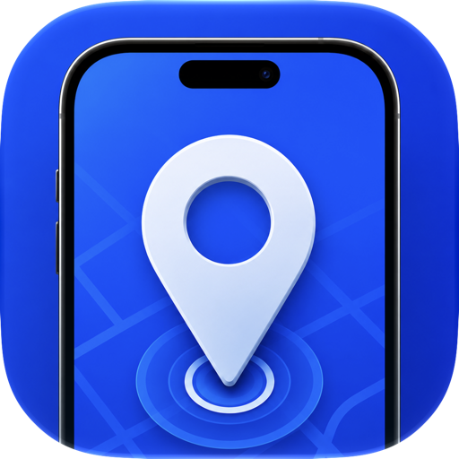

Browse an offline catalog of countries, capitals, and cities, or search Apple Maps for a custom place.

Simulator Location Tools
A native macOS developer tool for setting locations, previewing routes, and simulating movement on one or more booted iOS Simulators.
Built for location-aware apps
Calculate driving routes, import GPX, and control playback speed, repeat, and progress.
Apply a location or route to multiple booted iOS Simulators at the same time.
See it in action